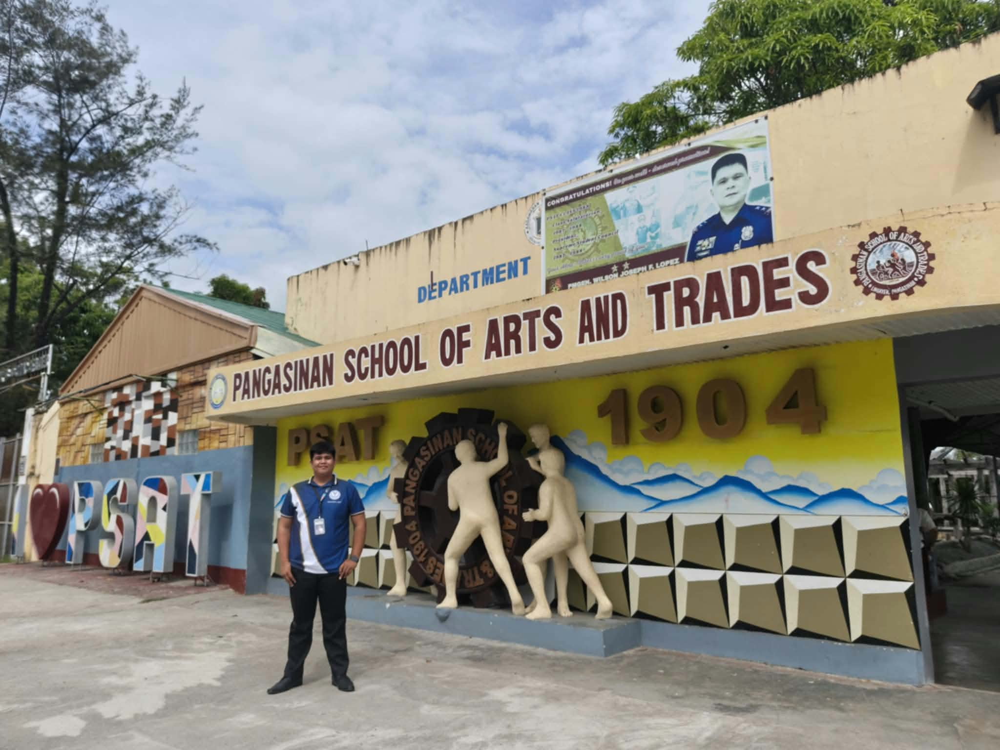
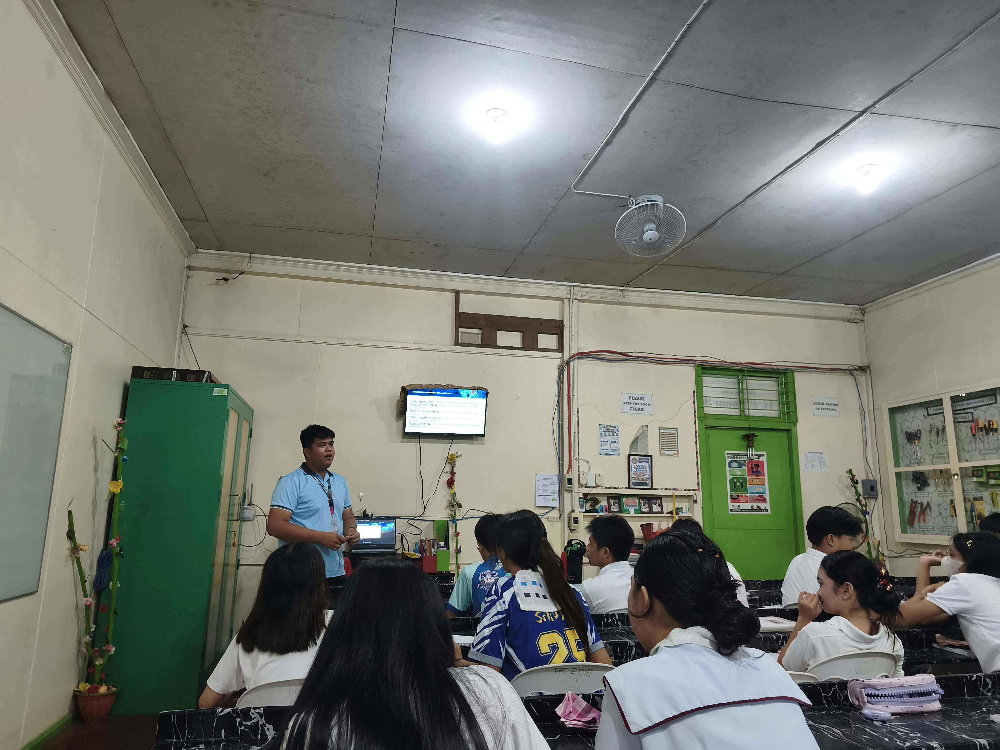

Learning to Understand Students
Observation helped me become more aware of different student behaviors, learning needs, and the importance of patience.
FIELD STUDY 2 · CLASSROOM OBSERVATION
My best experiences, meaningful lessons, and unforgettable moments during classroom observation.
Explore My Experience ↘
My Background
BS Information Technology
Field Study 2
Classroom Observation
Observation Site
Pangasinan School of Arts and Trades
A LITTLE ABOUT ME
Hi! My name is Mark John Paul Villacorta. I graduated from Pangasinan State University–Lingayen Campus with a Bachelor of Science in Information Technology (BSIT). After graduating, I pursued additional education units at Saint Columban College, Inc., in Lingayen.
As part of our Field Study 2 subject, we were required to conduct classroom observations. I was assigned to Pangasinan School of Arts and Trades (PSAT), specifically in the TVE-SICTNIS Department, under the guidance of my cooperating teacher, Ma’am Shernalyn M. Ferrer.
This experience gave me a closer look at teaching strategies, classroom management, student participation, and the dedication required to become an educator.
THE HIGHLIGHT OF MY JOURNEY
One of the most meaningful moments was having the opportunity to teach Grade 10 students and share what I learned from my IT background.

SHARING KNOWLEDGE THROUGH PRACTICE
The best experience I gained during my classroom observation was becoming more aware of the knowledge, skills, and preparation I need to develop as a future teacher. It helped me understand what to expect in the teaching profession, including how to handle students appropriately, understand their different behaviors, and prepare for the challenges and responsibilities of being an educator.
One of the most memorable parts was being given the opportunity to teach Grade 10 students. I applied the knowledge and skills I gained from my Bachelor of Science in Information Technology degree by teaching them how to make a fiber optic cable. It allowed me to share my knowledge and give the students a practical learning experience.
It was fulfilling to connect my IT background with teaching. I realized that teaching is not only about delivering information, but also about helping learners discover new knowledge and develop practical skills.
Observation helped me become more aware of different student behaviors, learning needs, and the importance of patience.
I learned that effective teaching takes preparation, flexibility, clear communication, and continuous improvement.
Teaching fiber optic cable skills showed me that my previous studies can help students learn useful, hands-on skills.
GUIDANCE AND INSPIRATION
Ma’am Shernalyn M. Ferrer · TVE-SICTNIS Department


“This observation experience helped me see how much patience, preparation, and care are needed to guide students and support their learning.”— A lesson I will carry with me
MOMENTS CAPTURED
A few snapshots from my classroom observation journey. Select any photo to view it larger.
Every classroom observation is a chance to learn something new.
✿MY REFLECTION
Overall, my classroom observation experience helped me become more prepared for my future career as an educator. It strengthened my confidence, broadened my understanding of the teaching profession, and reminded me that continuous learning, patience, and dedication are essential to becoming an effective teacher.
I will carry these lessons with me as I continue to improve my teaching skills and work toward creating a classroom where students feel supported, respected, and encouraged to learn.
WITH A GRATEFUL HEART
To Ma’am Shernalyn M. Ferrer, the students of PSAT, and everyone who helped make this Field Study 2 experience meaningful—thank you. The lessons I gained will remain part of my journey toward becoming a better educator.
With gratitude,
Mark John Paul Villacorta